This plugin helps to share the post,page to your blog or site
To install a plugin in your WordPress admin panel, follow the following steps:
1) Dimand Shape |
2) Cricle Shape |
3) Square Shape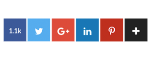 |
4) Wide Shape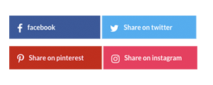 |
5) Wide Shape Animation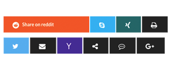 |
6) Wide Shape Animation Circle |
7) Big Circle |
8) Big Squre |
9) Onebox Shape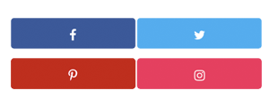 |
10) Animate Shape |
11) Sticky Left Style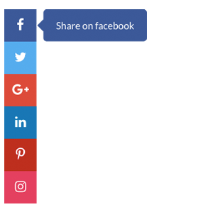 |
12) Sticky Right Style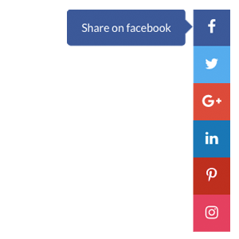 |
13) Fixed Shae Right Sticky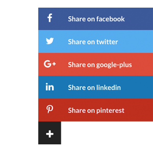 |
14) Fixed Shae Right Sticky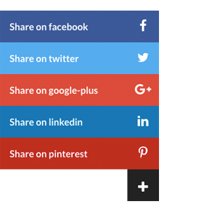 |
15) Click Show Left Sticky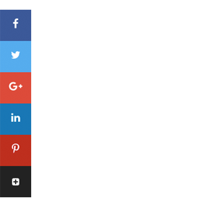 |
16) Click Show Right Sticky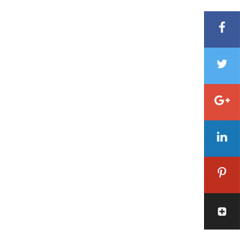 |
17) Bubble Circle Center Left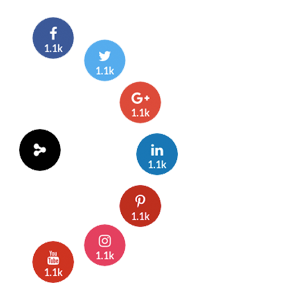 |
18) Bubble Circle Center Top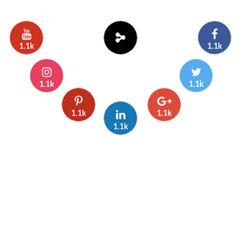 |
19) Bubble Circle Right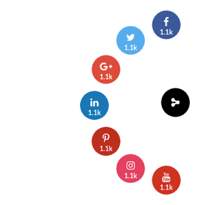 |
20) Bubble Circle Right Top Corner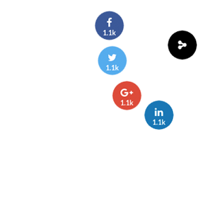 |
21) Bubble Circle Center Bottom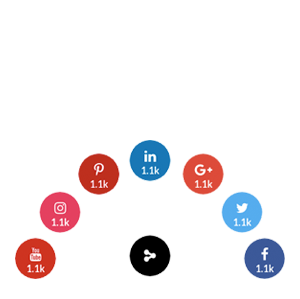 |
22) Bubble Circle Buttom Right Corner |
23) Bubble Circle Left Top Corner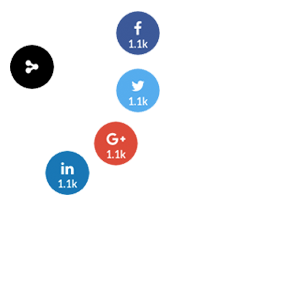 |
24) Bubble Circle Buttom Left Corner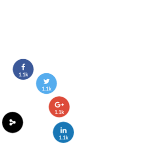 |